开心果 Need Car · 2022-11-25T09:03:00+08:00 · 微信原文
随着芯片资源的不断扩充，增加了App（Application）升级方式的多样性。比如，本文要讨论的SOTA（Software Updates Over The Air），通过Aurix TC3xx SWAP机制，使得App的升级更加便捷。本文讨论实现SOTA的一些关键性问题：
Aurix TC3xx的内存映射机制
SWAP配置及注意事项
Aurix TC3xx SWAP Demo实现
如果要支持SWAP功能，首先，硬件的内存资源需要足够。因为SWAP功能需要两个等大小的物理内存空间，用以存储程序。eg：App程序的大小为3Mbyte，如果要支持SWAP功能，至少需要硬件的PFlash空间＞6Mbyte。先看一下TC39x手册中的内存空间及映射机制：
一、Standard Address Map
不启用SOTA功能时，App程序可以存在如下所示的PF0（Program Flash0）~ PF5（Program Flash5）中，空间大小共计16Mbyte，16Mbyte的空间划分在Segement A，如下所示：
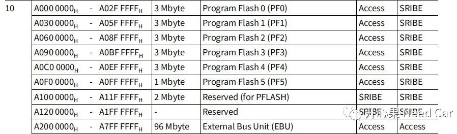
启用SOTA功能时，PFlash被划分为两个Bank Group，即：A-Banks和B-Banks，这也就是我们常说的A/B分区，其中一个Banks被映射到CPU的可执行空间，这个Banks被称为激活区（Active Banks），未被映射到CPU执行空间的Banks被称为非激活区（Inactive Banks）。其中，PF0、PF1、PF4映射到A-Banks，PF2、PF3、PF5映射到B-Banks，如下所示：
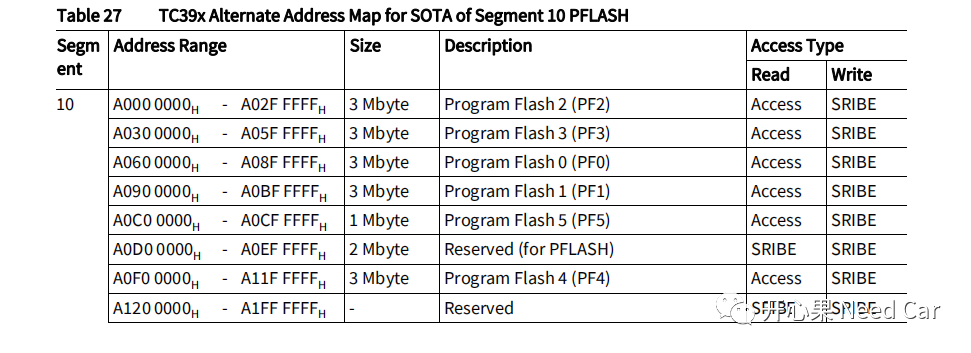
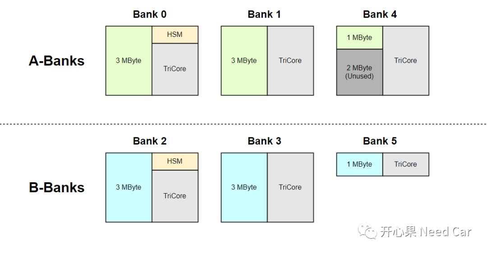
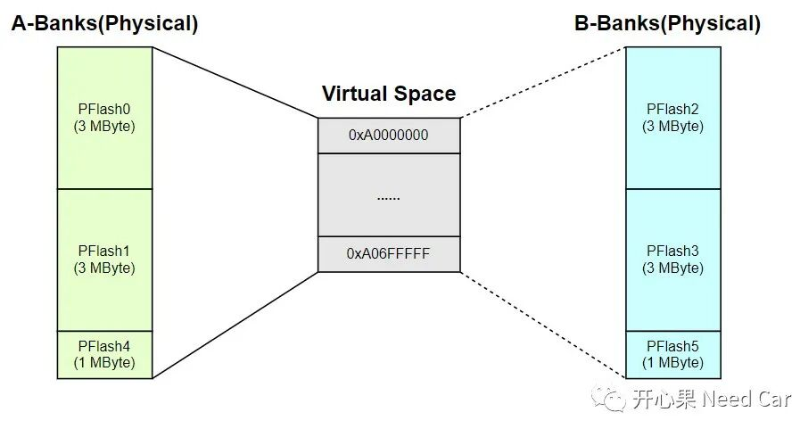
注意：
通过DMU（Data Memory Unit）操作Flash时，需要操作Pflash映射的物理地址空间。即：Active Banks擦除Inactive Banks时，需要按照Inactive Banks映射的地址空间擦/写。
eg：A-Banks（Active Banks）的起始地址0xA0000000，B-Banks（Inactive Banks）的起始地址0xA0600000，A-Banks操作Flash Driver擦/写B-Banks时，操作的起始地址为0xA0600000。
1、SWAP使用的基本流程
调整Linker文件（链接文件）；
软件开发，主要指App程序开发，生成可执行文件（*.bin、*.Hex等）；
将可执行文件烧录到PFlash中；
配置SWAP，包括：A/B选择配置，SWAP使能。
对应流程如下所示：
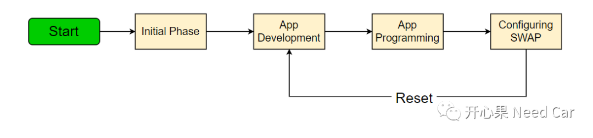
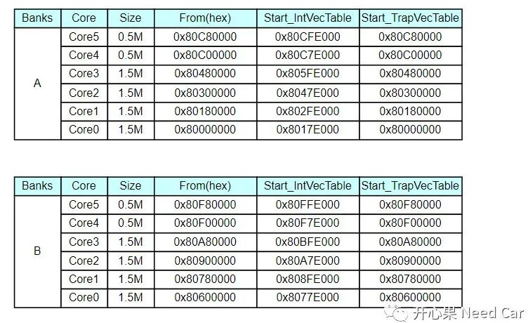
2、SWAP配置
配置SWAP，需要配置UCB23（ORIG）和UCB31（COPY），选择映射地址。UCB位于DFlash0区域，UCB23（ORIG）和UCB31（COPY）的地址空间范围如下所示：
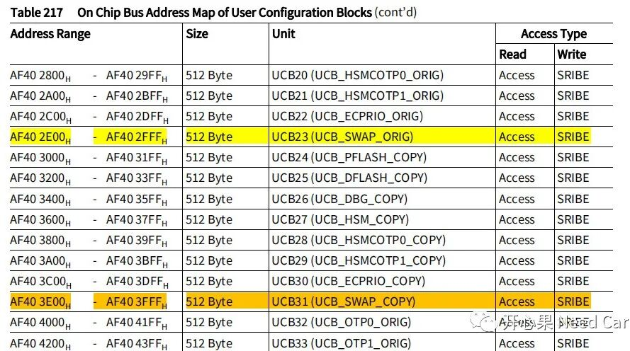
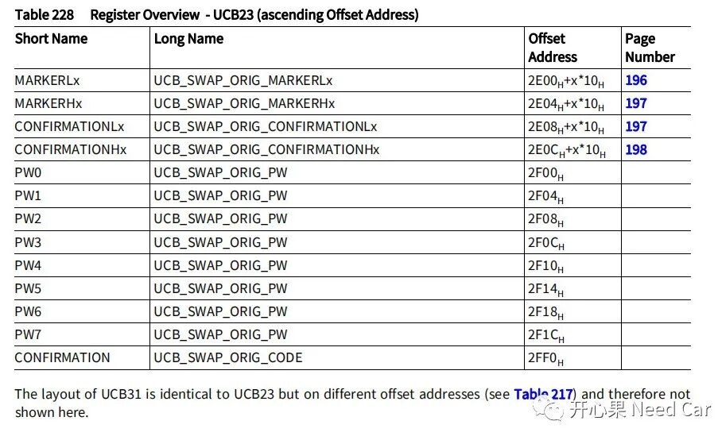
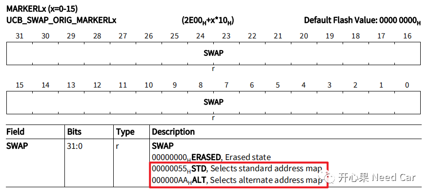
（二）UCB_SWAP_ORIG_MARKERHx（x=0~15）
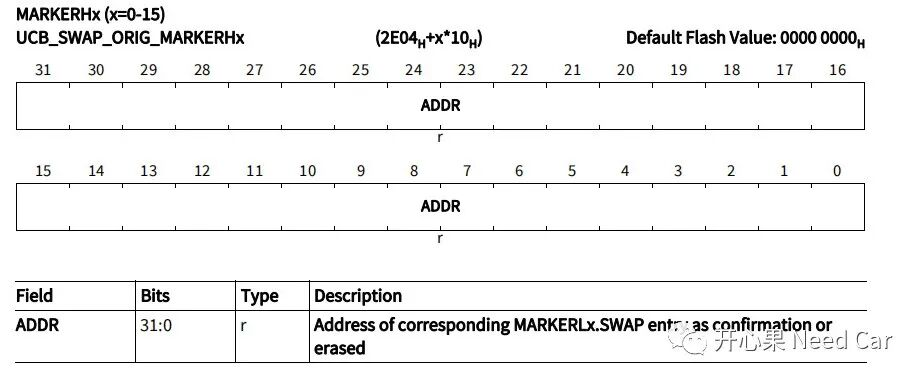
MARKERHx中存放对应MARKERLx.SWAP的入口地址。
（三）UCB_SWAP_ORIG_CONFIRMATIONLx（x=0~15）
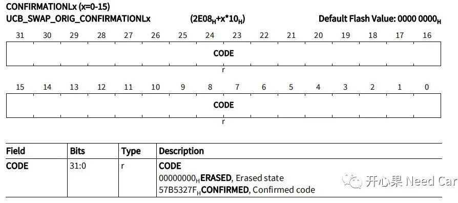
如果要MARKERLx.SWAP有效，需要在UCB_SWAP_ORIG_CONFIRMATIONLx寄存器中写入固定值0x57B5327F。
（四）UCB_SWAP_ORIG_CONFIRMATIONHx（x=0~15）
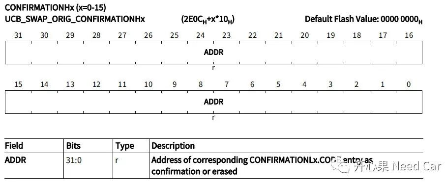
存放CONFIRMATIONLx.CODE的入口地址。
（五）SWAP配置的代码实现
SWAP的配置是SWAP使能的前提，如上的（1）~（4）的代码实现示意如下：
/* Memory A/B SWAP */void Swap_ConfigAndEnable(uint32 map){/* UCB_SWAP_COPY */ucb_erase(UCB_SWAP_COPY);ucb_write(UCB_SWAP_COPY, map, UCB_SWAP_COPY);ucb_write(UCB_SWAP_COPY + 8, CONFIRMEDCODE, UCB_SWAP_COPY + 8);ucb_write(UCB_SWAP_COPY + 0x1F0, UNLOCKCODE, 0x00000000);/* UCB_SWAP_ORIG */ucb_erase(UCB_SWAP_ORIG);ucb_write(UCB_SWAP_ORIG, map, UCB_SWAP_ORIG);ucb_write(UCB_SWAP_ORIG + 8, CONFIRMEDCODE, UCB_SWAP_ORIG + 8);ucb_write(UCB_SWAP_ORIG + 0x1F0, UNLOCKCODE, 0x00000000);/* Enable SWAP */ucb_write(UCB_OTP0_COPY + 0x1E8, 0x00030000, 0x00000000);ucb_write(UCB_OTP0_ORIG + 0x1E8, 0x00030000, 0x00000000);}
SWAP的禁用代码示意如下：
/* SWAP Disable */void swap_disable(void){// Erase UCB31(UCB_SWAP_COPY)ucb_erase(UCB_SWAP_COPY);// Write Confirmation Code into UCB31ucb_write(UCB_SWAP_COPY + 0x1F0, UNLOCKCODE, (uint32)0x00000000);// Delete UCB23(UCB_SWAP_ORIG)ucb_erase(UCB_SWAP_ORIG);// Write Confirmation Code into UCB23ucb_write(UCB_SWAP_ORIG + 0x1F0, UNLOCKCODE, (uint32)0x00000000);// Erase UCB40(UCB_OTP0_COPY)ucb_erase(UCB_OTP0_COPY);// Write Confirmation Code into UCB40ucb_write(UCB_OTP0_COPY + 0x1F0, UNLOCKCODE, (uint32)0x00000000);// Erase UCB32(UCB_OTP0_ORIG)ucb_erase(UCB_OTP0_ORIG);// Write Confirmation Code into UCB32ucb_write(UCB_OTP0_ORIG + 0x1F0, UNLOCKCODE, (uint32)0x00000000);}
提示：
这里的map = 0x55或者0xAA；
UCB23对应的CONFIRMATION寄存器配置成UNLOCKCODE模式（0x43211234）。
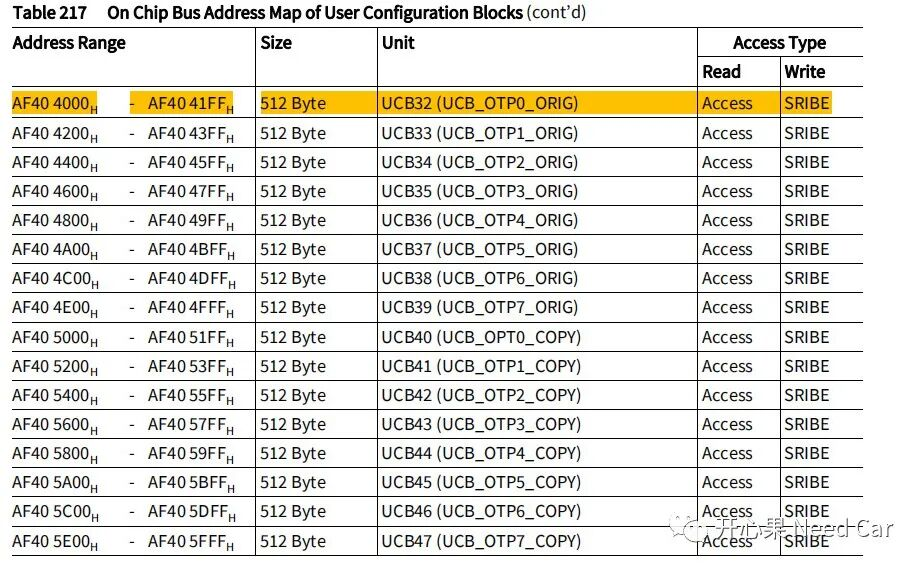
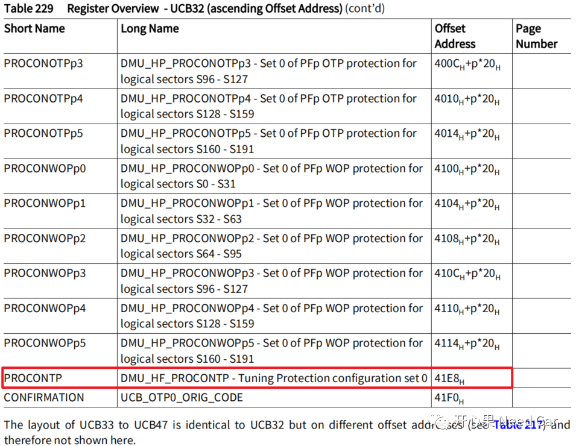
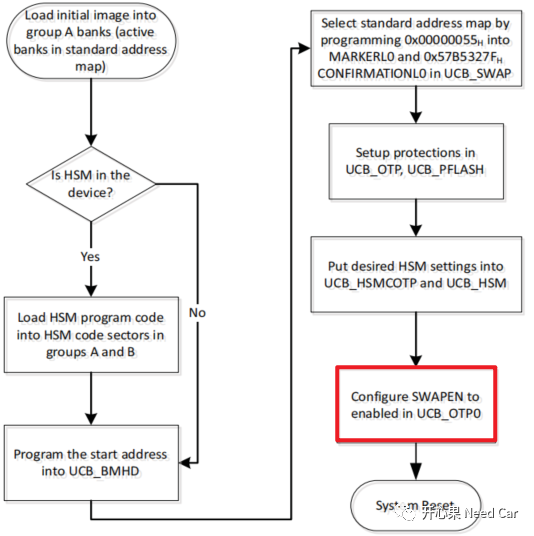
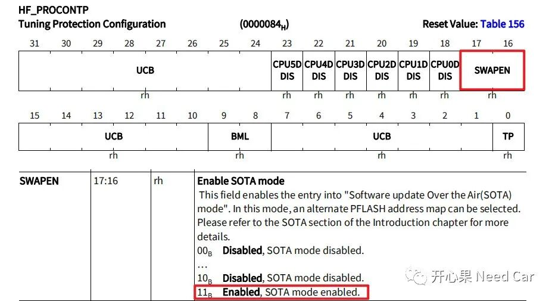
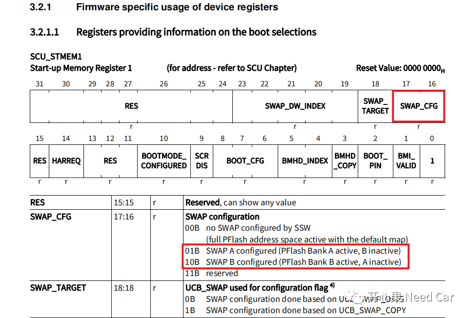
4、SWAP配置不当导致的锁板风险
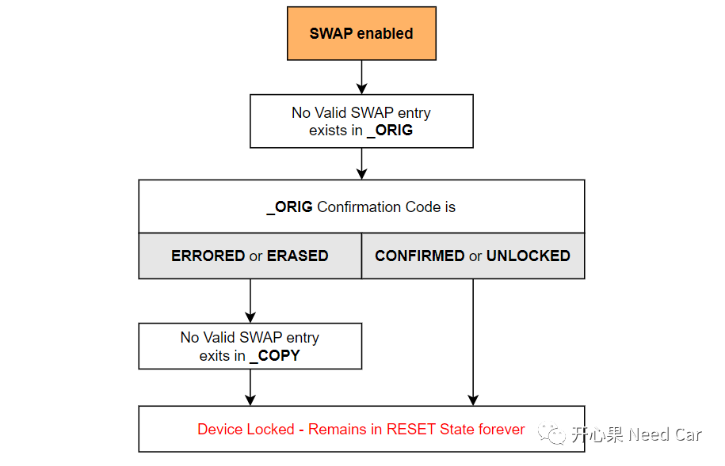
关于SWAP的代码实现，参考了github上的工程，具体链接如下：
https://github.com/s2obi/Aurix-TC387-SWAP
往期精彩回顾